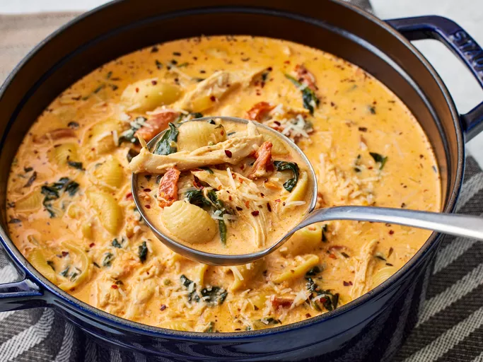

Chicken Soup

Description
Maybe you have heard of Marry Me Chicken before,
a delicious dish of sautèed chicken blanketed in a creamy
sun-dried tomato sauce that "is worthy of a marriage proposal!"
It can be enjoyed on its own or served over pasta or rice for an extra
hearty meal. But it can also be turned into an irresistible soup for a
perfect bowl of comfort all in one pot.
Ingredients
- Sun-dried tomatoes
- Aromatics
- Broth
- Pasta
- Chicken
- Seasonings and garnishes
Steps
- Start by sautéing the onion and garlic in the oil
from the sun-dried tomatoes
- Add in tomatoes and tomato paste
- Pour in the broth, cream and seasonings
- Simmer the base together before adding dried pasta
to cook directly in the soup until al dente
- Spinach and shredded rotisserie chicken go in
toward the end to warm through
- Add the cream cheese, Parmesan, and final garnishes
sfor big spoonfuls of delicious flavor